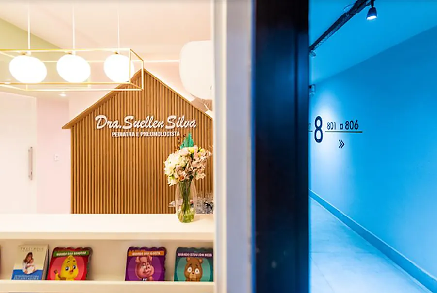
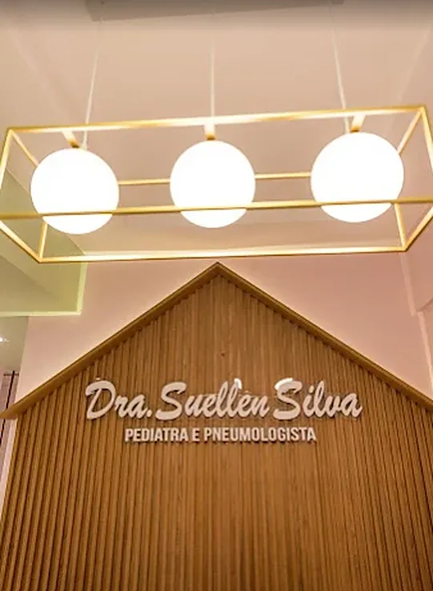
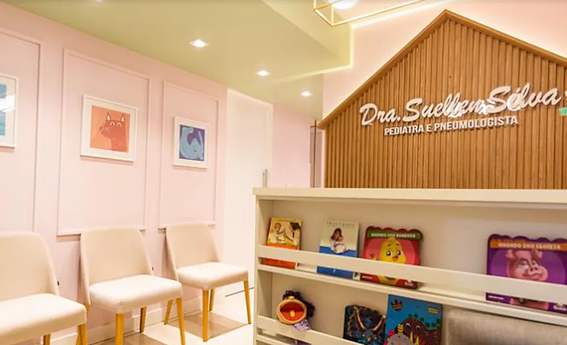
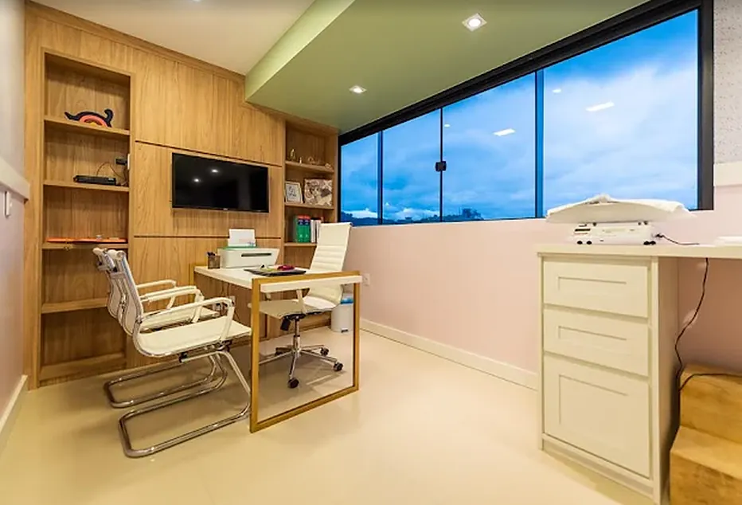
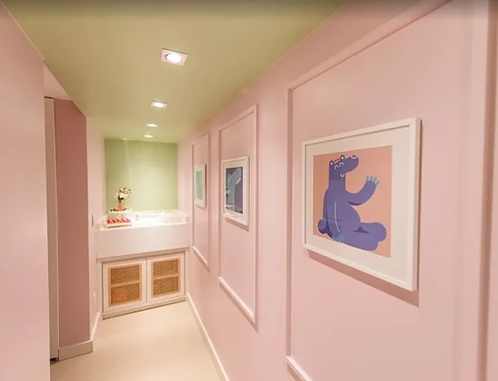
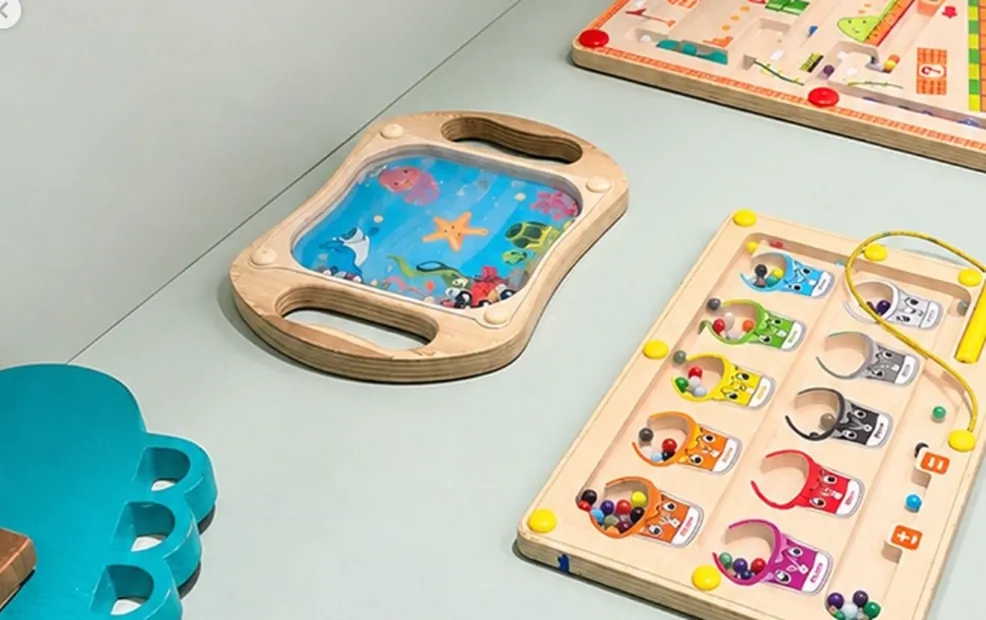

Presencial
No consultório do Ano Bom Center, em Barra Mansa: sala 801, 8º andar.
Agendar presencialMenos crises, mais saúde. Pediatria e acompanhamento respiratório para crianças de 0 a 12 anos, com calma, escuta e um plano feito para o seu filho.
anos de experiência em pediatria
famílias atendidas na região
93 avaliações no Google
Escolha a situação mais parecida com a do seu filho. Eu explico rapidinho e deixo a mensagem pronta para você me chamar no WhatsApp.
Tosse toda noite, que volta a cada virose ou dura semanas, merece ser investigada. A ideia é entender a causa, e não só tratar a crise.
A pneumologia infantil cuida das doenças respiratórias da criança, das mais comuns às mais raras:
Talvez o que seu filho precise não seja só uma consulta. Seja acompanhamento.
Agendar com a pneumopediatraAntes de ser pneumologista infantil, sou pediatra. Acompanho a criança por inteiro, de 0 a 12 anos:
Na consulta de rotina, eu já fico de olho no que muita gente deixa passar: o sono, o ronco, a tosse que sempre volta.
Agendar consulta de pediatriaEle entra num plano de acompanhamento individual. Siga o caminho:
Você me chama no WhatsApp, a gente encontra o melhor horário e já explica como a consulta funciona.
Cada criança é avaliada com calma, olhando para:
Condutas individualizadas, protocolos e diretrizes atualizados, e uso estratégico de medicações só quando necessário. Nada de excesso. Nada de negligência.
Você não fica sozinha. Monitoramos a evolução e ajustamos as condutas sempre que for preciso.
Você sai sabendo os sinais de alerta e com um plano de ação para as crises em mãos.
Para reconhecer cedo o que está acontecendo com o seu filho.
Espaçador, máscara, quantas vezes: o detalhe que faz o remédio funcionar.
Sem pânico e sem descuido: cada coisa no seu momento.
Com um plano de ação claro para as crises, combinado na consulta.
Sou pediatra e pneumologista infantil, daqui da região. Há mais de 10 anos cuido de crianças e das famílias que chegam junto com elas.
No meu consultório ninguém tem pressa. Você pode perguntar, contar suas preocupações e falar do seu filho sem medo de julgamento. E eu continuo por perto depois da consulta.
Sigo estudando sempre, com cursos e atualizações, para trazer para cada criança o que há de mais atual.
Aqui, a consulta é escuta. É orientação clara. É cuidado próximo.
CRM 520101146 · RQE 31091
Conversar com a doutoraUm espaço pensado para a criança se sentir segura, e para você também. Entre e dê uma olhada.






Bem-vinda! Sala 801, 8º andar do Ano Bom Center.
No consultório do Ano Bom Center, em Barra Mansa: sala 801, 8º andar.
Agendar presencialConsulta por vídeo, sem sair de casa, para quem mora longe ou precisa de praticidade.
Agendar on-lineA consulta vai até vocês, no conforto de casa. Consulte a sua região pelo WhatsApp.
Consultar minha regiãoSe a sua não estiver aqui, é só me chamar.
Tirar uma dúvidaPelo WhatsApp ou por ligação no (24) 99972-9524. Se quiser, escolha a situação do seu filho lá no começo da página e a mensagem já vai pronta.
R. Abdo Felipe, 202, sala 801, no Ano Bom Center, bairro Ano Bom, em Barra Mansa/RJ. O mapa com as rotas está logo abaixo.
Atendimento particular, com pagamento no cartão (consulte as condições de parcelamento), ou pelo convênio SulAmérica.
Sim, a SulAmérica. Para os demais planos, o atendimento é particular.
Sim. Além do consultório, há consulta on-line por vídeo e atendimento domiciliar. Para o domiciliar, consulte a sua região pelo WhatsApp.
Crianças de 0 a 12 anos, tanto em pediatria quanto em pneumologia infantil.
De segunda a sexta, das 8h às 18h.
O WhatsApp é para agendamentos e orientações rápidas. Quando a criança precisa ser avaliada, o lugar certo é a consulta, para cuidar dela com toda a atenção que merece.
Me chama no WhatsApp. A gente encontra o melhor horário e eu te explico tudo com calma.
R. Abdo Felipe, 202, sala 801
Ano Bom Center · Ano Bom
Barra Mansa/RJ · 27323-000
Segunda a sexta
das 8h às 18h